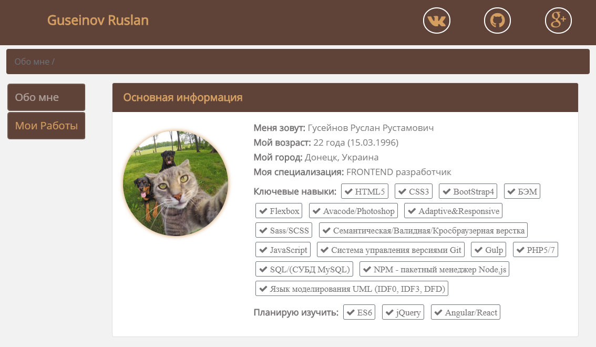

Верстка PSD-макета на основе фреймверка BootStrap 4

Верстка PSD-макета на основе фреймверка BootStrap 4
Верстка шаблона производилась на основе PSD макета
размеров компьютерного экрана, поэтому планшетная и мобильная версия шаблона
производилась с учетом моего личного усмотрения. К шаблону была добавлена панель
администратора для управления контентом.
Чтобы детальнее узнать о проекте, нажмите на кнопку «Подробнее».
Адаптивная верстка PSD-макета «WG»

Адаптивная верстка PSD-макета «WG»
Разработанный шаблона является полностью адаптивным.
Верстка шаблона производилась с PSD макета компьютерной версии экрана,
поэтому адаптив для планшетных и мобильных устройств разрабатывался
с учетом моего личного усмотрения.
Чтобы детальнее узнать о проекте, нажмите на кнопку «Подробнее».
Верстка шаблона «Резюме/Портфолио» на основе BootStrap 4
Верстка шаблона на основе BootStrap 4 «Portfolio»
Разработка дизайна и шаблона производилась полностью полностью
лично инициативе для того чтобы показать личные навыки работодателю.
Чтобы детальнее узнать о проекте, нажмите на кнопку «Подробнее».